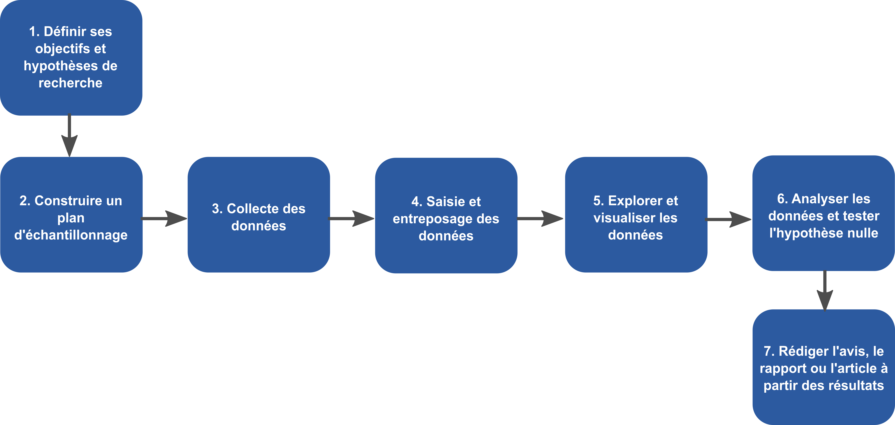

1 Introduction
Bienvenue au cours BIO500 - Méthodes en écologie computationelle ! Ce livre marque l’utilisation d’une nouvelle approche pédagogique dans le cours BIO500. Vous trouverez dans ce livre les objectifs, les connaissances, les ressources utiles et les tâches pour chacune des sections du cours.
Le travail d’un biologiste tourne, généralement, autour de la collecte de données, l’analyse de ces données et la communication des résultats de son travail. Ou du moins, c’est ce que de nombreuses personnes pensent. Les tâches du ou de la biologiste sont plus diverses qu’il n’en parait au premier regard et certaines étapes intermédiaires sont souvent oubliées. En effet, il faut établir un plan d’acquisition de données, gérer ces données une fois collectées et les explorer pour en comprendre les finesses. Aujoud’hui plus que jamais, le quantité de données collectées peut être importante et de nature complexe. Cela représente un défi de taille auquel vous serez amenés à faire face sur le marché du travail et une bonne formation sera un atout considérable.
L’écologie computationnelle se trouve à l’interface entre l’informatique et l’analyse de données pour étudier les systèmes écologiques et effectuer le suivi de la biodiversité. La disponibilité des données s’accroit rapidement et permet de se diriger vers une science prédictive. C’est pourquoi une approche computationnelle est requise pour répondre aux enjeux modernes de biodiversité.
Ce cours vous fera explorer chacune des étapes du travail de biologiste et à les réaliser dans le cadre d’un projet. Vous aurez à concevoir votre projet en tenant compte des étapes et des méthodes susceptibles d’influer sur la reproductibilité.
Voici un bref résumé des objectifs spécifiques. Au terme de ce cours, vous serez en mesure de :
Planifier une base de données et la préparation de formulaires pour leur acquisition.
Programmer et interroger une base de données relationnelle.
Compiler et exécuter un projet au moyen de la librairie
targets.Représenter visuellement les données au moyen de
R.Préparer un rapport d’étude au moyen de
RMarkdown.Utiliser un système de contrôle de version pour le suivi des modifications sur du code.
Porter un regard critique sur la reproductibilité et la transparence d’études scientifiques.
1.2 Prérequis
Un ordinateur portable personnel est requis pour ce cours.
Ce cours obligatoire est offert aux étudiants en fin de programme de baccalauréat en biologie, concentration écologie. Le cours BIO109 : Introduction à la programmation scientifique est préalable à celui-ci.
À la suite de BIO109, il est attendu de vous aillez une maitrise des concepts de base de la programmation en R (indexation de jeux de données, boucles, opération conditionnelles, algorithmie). Si la programmation demeure difficile, vous apprécierez les livres Hands on Programming with R de Garret Grolemund et R for Data Science (2e).
R et RStudio
Pour débuter, il vous faudra télécharger R et RStudio si vous ne les avez pas déjà. Hand on Programming with R offre un excellent tutoriel en ligne.
Vous devriez régulièrement mettre à jour la version de R sur votre machine sans quoi vous pourriez vous frapper à des problèmes de compatibilité. Une mise à jour majeure de la version de R survient annuellement alors qu’il y a 2-3 mises à jour mineures par année. Une version minimale de R 4.2.0 ou plus récente est recommandée pour ce cours.
Librairies
Il existe une myriade de librairies (packages) offrant des fonctions qui permettent d’effectuer des tâches spécialisées. Vous êtes libres d’utiliser les librairies de votre choix dans le cadre du cours.
Les tâches et exercices vus dans ce cours nécessiteront plusieurs librairies. Vous pouvez les télécharger en exécutant la fonction install.packages dans la console de RStudio. Copiez-collez dans la console le morceau de code suivant pour installer les librairies nécessaires pour BIO500 :
install.packages(
c("RSQLite", "Rmarkdown", "targets", "tarchetypes", "rticles", "sf", "terra", "leaflet")
)Git
Pour assurer la reproductibilité et la transparence des travaux faits dans ce cours, tout sera scripté. Pour permettre la collaboration sur des scripts, nous utiliserons les fonctionnalités de versionnage de Git et de GitHub. Git est un logiciel qui est installé par défaut sur les systèmes d’exploitation Mac et Linux. Il devra être installé sur les systèmes Windows : https://git-scm.com/download/win.
1.3 Approche pédagogique
Ce livre vous accompagnera pour la durée du cours. Vous y trouverez des notions sur les différents outils utilisés, le matériel supplémentaire pour aller plus loin et de nombreuses ressources pour vous appuyer dans la maitrise des outils utilisés.
En classe, les séances seront constituées de courtes leçons magistrales couvrant les notions de base des différents outils utilisés, entrecoupées d’exercices spécifiques destinés à pratiquer les éléments enseignés. Les séances seront complémentées de discussions sur les enjeux de la reproductibilité en science. Les séances se concluront sur la réalisation d’un exercice intégrateur à compléter à la maison. L’apprentissage portera sur la réalisation d’un projet de session où vous serez responsables de l’ensemble des étapes d’une étude en écologie. Le travail sera réalisé par blocs, au fur et à mesure de la présentation du matériel.
1.1 Comment ce livre est organisé
Ce livre est divisé en quatre sections reflétant les étapes d’une étude écologique que nous explorerons.
Tout projet de science reposant sur des données débute par la planification de la collecte et l’organisation des données.
Les outils pour une science reproductible et transparente sont aujourd’hui incontournables. L’atteinte de standards de reproductibilité et de transparence pour les études n’est plus seulement demandée par certains cercles avant-gardistes, mais est dorénavant exigée par un nombre croissant de journaux scientifiques.
La visualisation de données est au centre d’une stratégie réussie de communication scientifique.
La communication scientifique marque la dernière étape d’une étude scientifique. Elle prend plusieurs formes et la plus répandue est assurément la publication d’articles dans des journaux scientifiques.
Dans chaque chapitre, un patron se répète : d’abord, des exemples motivants pour illustrer l’importance de la notion abordée, puis une plongée dans les détails. Chaque section du livre propose des exercices pour aider à intégrer les connaissances apprises. Malgré qu’il peut être facile de passer par-dessus les exercices, la pratique sur d’authentiques problèmes est le meilleur moyen d’apprendre.